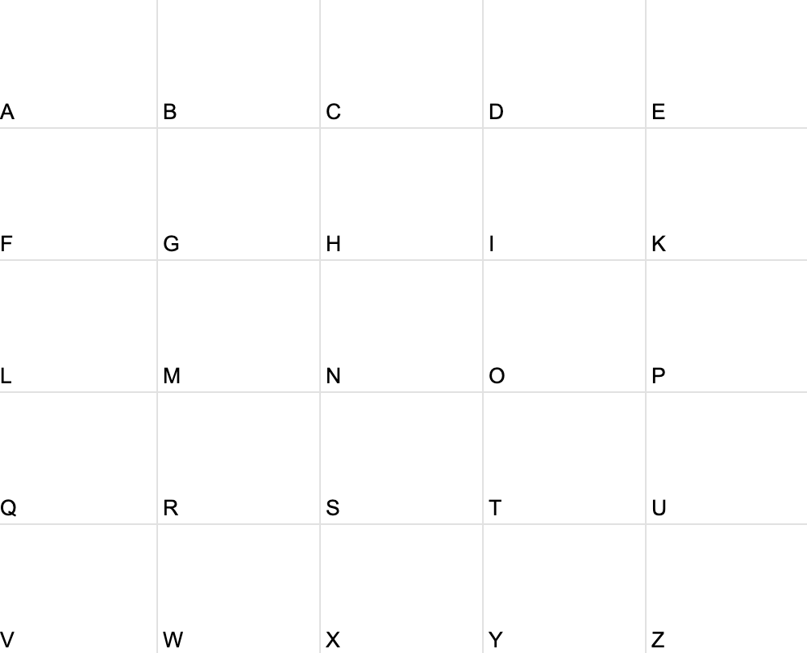
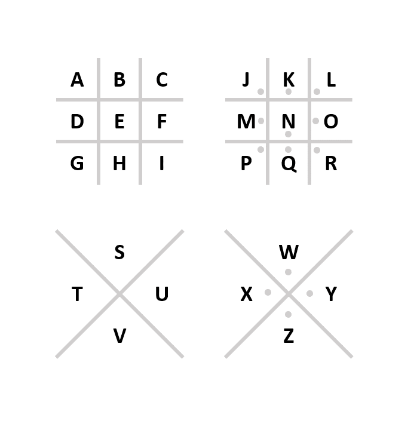

Codes:
Playfair

2 Letters at a time, make a rectangle with the letters and switch their horizontal corners. When the letters are in the same row horizontally, shift both to the right by one. When they are in the same collumn vertically, shift both down one. Same letter, right 1. If there is an odd number of letters in a word, add an X to the end and do it as you would noramlly. If you need to use J, use X instead.
PigPen

This one is simple. The shape you draw is the letters box or triangle. Include dots for the letters with the dots.